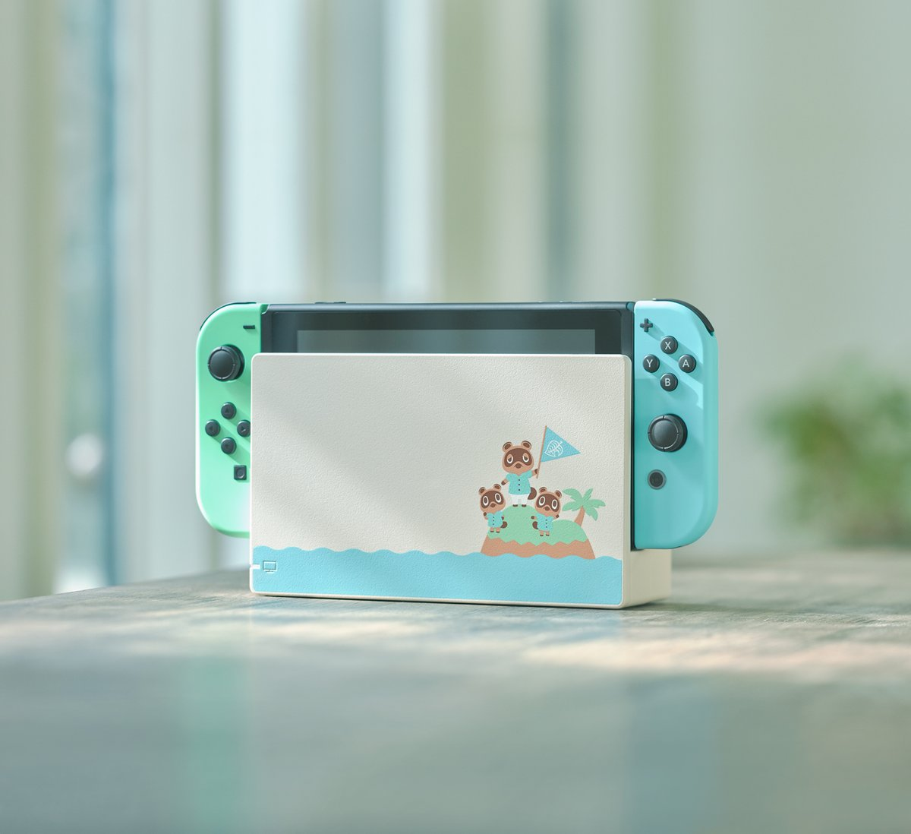
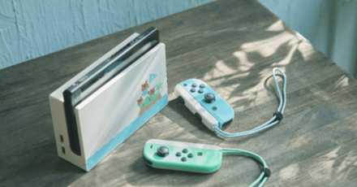

|  The Nintendo Switch Animal Crossing: New Horizons Edition is making its highly-anticipated return. Nintendo of America announced the console’s comeback on social media, notifying fans to check with their local retailers for stock. The ACNH Switch console arrives with pastel green and blue Joy-Cons, along with a dock that shows Tom Nook, Timmy and Tommy welcoming players to the island. The console was first released in March 2020 and sold out quite quickly. |  By April, however, Nintendo announced that stock shipments have been delayed due to COVID-19 and a spike in demand. Reports stated that Switch sales jumped over 150 percent in March across several markets, but despite the delays, a Nintendo rep confirmed that “more systems are on the way.” In related news, Animal Crossing: New Horizons will celebrate Halloween with a special event. |